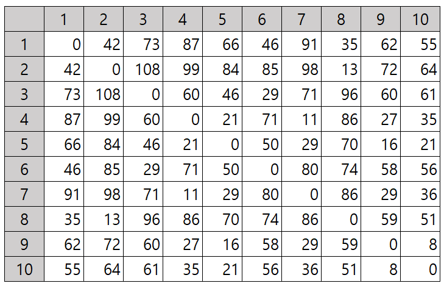

Travelling Salesman Problem#
외판원 문제(travelling salesman problem, TSP)는 조합 최적화(combinatorial optimization)에서 대표적인 문제로 NP-hard에 속하며 계산 복잡도 이론에서 해를 구하기 어려운 문제입니다. 이 문제는 여러 도시가 존재하고 한 도시에서 다른 도시로 이동하는 비용이 주어졌을 때, 모든 도시를 한 번씩만 방문하고 처음 출발했던 도시로 되돌아오는 총비용 또는 총거리를 최소화하는 경로를 결정하는 것입니다. 이러한 문제를 대칭 외판원 문제(symmetric travelling salesman problem)라고도 하며 그림 1과 같이 대칭 행렬을 뜻합니다. 예를 들면, 도시 간 거리를 단위 킬로미터(km)라하고 행을 출발도시 열을 도착도시라고 정의하면 4번 도시에서 7번 도시까지 거리는 11km입니다.

그림 1 대칭 행렬(symmetric matrix)